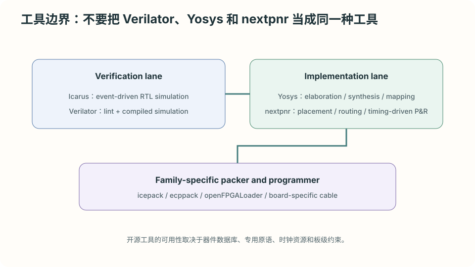

开源 FPGA 工具链：Yosys、nextpnr、Verilator 与 iCEstick 实战
厘清开源工具的职责与器件支持边界，使用 Yosys、nextpnr 和 family-specific packer 构建 iCEstick 示例，并比较 Verilator 与事件驱动仿真的适用范围。
01 / 开源 FPGA 工具链：开源的是哪一层？
“开源 FPGA 工具链”不是一个统一软件包。仿真、综合、布局布线、器件数据库、bitstream packing 和下载工具由不同项目提供；支持某个 FPGA 家族的一部分流程，不等于已经支持该家族的所有器件、时钟原语、IP 和完整 SoC。

常见分工是：Icarus Verilog 做 event-driven RTL 仿真；Verilator 做 lint 和编译型仿真；Yosys 做 RTL elaboration、逻辑综合和技术映射；ABC 参与逻辑优化；nextpnr 做布局布线；IceStorm/Trellis/Oxide/Apicula 等项目提供特定家族的器件数据库或 bitstream 工具；icepack/ecppack 等工具打包；openFPGALoader 或家族专用工具负责下载。
因此，判断开源流程是否适合一个项目，要逐项问：目标 part 是否支持？PLL/BRAM/DSP/SerDes 原语是否有映射？时钟和 I/O 约束支持到什么程度？bitstream 是否可生成？下载器是否支持该板卡？最后的 timing/power sign-off 是否需要厂商工具？
02 / Yosys：综合器，不是完整的厂商实现工具

Yosys 将可综合 HDL 转换为逻辑网表。典型流程包含读取 HDL、层次检查、过程块转换、优化、FSM/memory 处理、技术映射和输出网表。以 iCE40 为例，synth_ice40 是面向该家族的综合命令，能够输出 JSON/BLIF 等格式；它不负责为所有 FPGA 家族生成同一种通用 bitstream。
旧资料常把 Yosys 描述成“只支持 Verilog-2005、完全不支持 SystemVerilog”。这已经过时：当前上游 Yosys README 说明它有广泛的 Verilog-2005 支持，自 Yosys 0.67 起，上游集成了基于 slang 的 sv-elab；当前文档提供独立的 `read_slang` frontend，可读取 IEEE 1800-2017/2023 的可综合子集。它与默认 `read_verilog -sv` 是不同入口：后者仍只支持 SystemVerilog 的一小部分。实际项目应在目标二进制中运行 `help read_slang`，核对版本、构建选项和 feature support，不要把可综合子集说成完整语言支持。
示例 iCE40 综合命令：
yosys -p "read_verilog blink.v; synth_ice40 -top blink -json build/blink.json"若综合日志报告黑盒、未映射原语、未使用输入、锁存器或 memory mapping 变化，必须先解释这些警告，再把网表交给 P&R。
03 / nextpnr 与器件数据库：支持范围必须标注成熟度

nextpnr 是 timing-driven 的开源 FPGA place-and-route 工具。当前上游 README 列出 Lattice iCE40（IceStorm）、ECP5（Trellis）、Nexus（Oxide）、Gowin LittleBee/Aurora V（Apicula）、NanoXplore NG-Ultra（Beyond）和 Cologne Chip GateMate（Peppercorn）等后端。需要进一步区分成熟度：Nexus 当前属于 `all+alpha` 的 experimental arch；Cyclone V（Mistral）、MachXO2（Trellis）和 Xilinx 7-Series（Project X-Ray）也被标为 experimental。NG-Ultra 的 P&R backend 可用，但生成二进制 bitstream 需要 NanoXplore 专有 Impulse 工具，因此不是完整的纯开源端到端流程。支持列表不代表每个 part、封装和 IP 均已覆盖。不能再把“nextpnr-xilinx 可用”写成 Xilinx 7 系列已经完整生产级支持。
Project IceStorm/Trellis/Oxide/Apicula 等项目承担不同器件家族的数据库和 bitstream 相关工作。某个 backend 能完成逻辑放置布线，不代表 PLL 配置、SerDes、DDR、复杂 IP 或所有速度等级都已覆盖。以目标 part 的官方支持列表、项目 issue 和实际构建日志为准。
04 / 可复现实战：iCEstick + iCE40-HX1K-TQ144
仓库提供一个 iCEstick 示例：12 MHz 外部时钟经 SB_GB 送入全局时钟网络，25-bit 计数器驱动五个 LED。PCF 引脚表沿用 YosysHQ/nextpnr 上游 iCE40 blinky 示例中的 iCEstick pin mapping；若使用其他板卡，必须替换为对应原理图和 pinout，不能照搬。
cd examples/open-source/ice40
make
# build/blink.bin 是生成的配置文件
# 连接并确认 iCEstick 后，显式确认才执行下载：
make flash CONFIRM_FLASH=YESMakefile 依次调用 Yosys synth_ice40、nextpnr-ice40 --hx1k --package tq144、icepack。下载步骤与 bitstream 生成分离，避免在没有确认目标板时误烧录。
上游 nextpnr 项目给出了 iCEstick 示例及相同 PCF 引脚表；该示例是板级 pin mapping 的来源，不是对本仓库构建结果或硬件运行的证明。YosysHQ/nextpnr · iCE40 blinky example。
05 / Verilator：编译型仿真与 lint 的优势和边界
Verilator 会把 Verilog/SystemVerilog 设计转换成优化后的 C++/SystemC 模型，并可生成可执行仿真器。它适合快速迭代、lint、覆盖率和大规模回归；Icarus 则适合许多 event-driven Verilog 测试。两者的仿真语义和支持范围并不完全相同。
verilator --lint-only -Wall --top-module rv32i_imm_gen \
examples/rtl/rv32i_frontend_units.v
verilator --binary --timing --trace \
--top-module tb_rv32i_frontend_units \
examples/rtl/rv32i_frontend_units.v \
examples/tb/tb_rv32i_frontend_units.v
./obj_dir/Vtb_rv32i_frontend_units不要照搬“Verilator 一定比某商业模拟器快 10–100 倍”的结论：速度取决于设计规模、testbench、编译选项、线程数、波形开销和比较对象。Verilator 对 X/Z、SDF timing annotation 和 mixed-signal 的支持也不能等同于完整四态事件模拟器。应按验证需求组合工具，而不是寻找一个万能替代品。
06 / 开源与商业工具混合使用：以验证边界为准
合理的混合工作流可以是：用 Icarus/Verilator 做快速 RTL 回归，用 Yosys/nextpnr 对明确支持的低成本 FPGA 进行原型实现；对于需要厂商专用硬核 IP、复杂 PLL/SerDes、器件签核或完整 timing/power 分析的设计，再用厂商工具完成最终实现与 sign-off。
本仓库的 iCEstick Makefile 是可运行的工具命令入口；CI 只做该示例的静态契约检查，没有在 GitHub Actions 中安装完整 IceStorm/nextpnr 工具链，也没有生成 bitstream 或连接板卡。不要把静态检查写成“开源实现通过”。
自测：为什么 nextpnr 完成 P&R 不代表开发板一定能运行？
还需要器件/封装与 PCF 匹配、时钟与 I/O 电气约束正确、bitstream packer 和下载器适配板卡，并验证电源、时钟、配置和外设连接。静态工具输出不能替代板级功能测试。